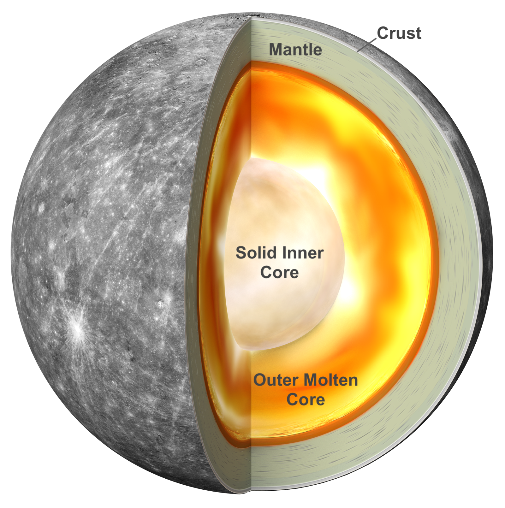

Mercure, l'oubliée du Système Solaire
Mercure est la première planète du Système Solaire, la plus proche du Soleil. Pourtant, elle reste souvent éclipsée par ses voisines plus grandes ou plus intrigantes comme Mars ou Jupiter. Petite, difficilement observable depuis la Terre à cause de sa proximité avec notre étoile, Mercure a longtemps été négligée par les astronomes. Ce n’est qu’avec l’avènement des sondes spatiales qu’elle a commencé à livrer ses secrets.
Ce monde brûlant, de la taille de la Lune mais bien plus dense, intrigue par son apparente simplicité… qui cache en réalité une complexité inattendue. Sa surface criblée de cratères rappelle notre satellite, mais son noyau surdimensionné, son champ magnétique résiduel, et même la présence de glace dans ses régions polaires en font un objet d’étude captivant pour comprendre l’histoire primitive du Système Solaire.
La planète Mercure vue par la sonde MESSENGER ©NASA/Johns Hopkins University
Pourquoi est-elle si méconnue ?
Observer Mercure depuis la Terre est un défi. Toujours très proche du Soleil dans le ciel, elle n’apparaît que brièvement à l’aube ou au crépuscule, rasant l’horizon. Cette difficulté d’observation, ajoutée à sa petite taille et à l’absence d’une atmosphère significative, a longtemps limité notre compréhension de cette planète.
Ce n’est qu’en 1974, avec la mission Mariner 10, que des images rapprochées ont révélé un paysage lunaire frappant. Des décennies plus tard, la sonde MESSENGER a cartographié presque toute la surface de Mercure et mesuré précisément son champ magnétique, ses éléments chimiques, et sa structure interne. Ces données ont bouleversé nos hypothèses : pourquoi une si petite planète a-t-elle un si grand noyau ? Comment peut-il encore être partiellement liquide ? Et comment expliquer la présence de glace d’eau sur un astre si proche du Soleil ?
Carte globale de Mercure obtenue par MESSENGER ©NASA/Applied Physics Laboratory
Un intérêt scientifique renouvelé ?
Aujourd’hui, Mercure est devenue un terrain de recherche majeur. En étudiant cette planète, les scientifiques cherchent à mieux comprendre les premières phases de formation du Système Solaire. En effet, sa composition riche en métaux, son absence d’atmosphère dense, et sa proximité avec le Soleil en font un véritable fossile cosmique, peu altéré par les processus qui ont modifié d’autres planètes.
L’intérêt s’est amplifié avec la mission BepiColombo, une collaboration entre l’ESA et la JAXA lancée en 2018, qui atteindra Mercure en 2025. Son objectif : cartographier plus finement la planète, analyser son champ magnétique, son interaction avec le vent solaire, et étudier sa géologie en profondeur.
Illustration de la mission BepiColombo en route vers Mercure ©ESA
Ces nouvelles explorations pourraient non seulement résoudre les mystères de Mercure, mais aussi éclairer la compréhension des exoplanètes très proches de leur étoile, que l’on découvre aujourd’hui par milliers. Mercure, autrefois négligée, est en passe de devenir une clé de lecture pour décrypter les architectures planétaires les plus extrêmes de notre Univers.
Portrait robot de la planète
Mercure est souvent perçue comme une simple boule rocheuse brûlante tournant près du Soleil. Pourtant, cette petite planète réserve bien des surprises. Elle possède un champ magnétique, une exosphère changeante, et une surface marquée par une histoire géologique violente. Loin d’être une planète « morte », Mercure est le théâtre de phénomènes complexes, fruits d’un passé dynamique et d’interactions continues avec le Soleil. Son environnement extrême, alternant températures glaciales et chaleur intense, en fait un véritable laboratoire naturel pour comprendre les corps rocheux proches des étoiles.
Taille, masse, composition
Mercure est la plus petite des planètes du Système solaire, avec un diamètre d’environ 4 880 km, soit à peine plus grand que la Lune. Elle est cependant étonnamment dense, avec un noyau métallique qui occupe plus de 80 % de son rayon, un record. Sa surface est composée majoritairement de silicates, et marquée par d’innombrables cratères, failles et plaines volcaniques.
Parmi les formations les plus spectaculaires figurent les falaises de compression géantes, aussi appelées escarpements lobés. Ces structures s'étendent sur des centaines de kilomètres et atteignent parfois plus d'un kilomètre de hauteur. Elles sont dues au refroidissement progressif de Mercure : en perdant sa chaleur interne, la planète s’est contractée, comprimant sa croûte et provoquant ces plissements à grande échelle.
On observe également des plaines volcaniques, témoins d’une activité intense passée. Bien qu’éteints aujourd’hui, les volcans de Mercure ont autrefois recouvert la surface de vastes coulées de lave, laissant derrière eux un paysage figé mais fascinant. Ces régions offrent des indices précieux sur la manière dont l'intérieur de Mercure a évolué au fil des milliards d'années.
Comparaison avec d'autres astres
Bien que Mercure ne possède pas d’atmosphère dense ni de volcanisme actif, elle est loin d’être inactive. Son champ magnétique, découvert par la sonde Mariner 10, est surprenant pour une planète aussi petite. Ce champ, bien que 100 fois plus faible que celui de la Terre, interagit fortement avec le vent solaire. Résultat : Mercure est le théâtre de tempêtes magnétiques locales d'une intensité inattendue.
Ces interactions provoquent parfois des jets de particules chargées et des phénomènes appelés magnetic reconnection, similaires à ceux observés sur Terre mais à plus petite échelle. Elles affectent la fine exosphère de Mercure, composée de sodium, d’oxygène, de potassium et d’autres éléments volatils arrachés à la surface par le bombardement solaire.
En comparaison avec des astres comme la Lune, Mercure est plus active du point de vue magnétique. Et contrairement à Mars, elle a gardé une partie de son noyau liquide, ce qui explique en partie son champ magnétique actuel. La sonde MESSENGER a grandement contribué à dévoiler ces phénomènes, en cartographiant la surface et en mesurant les variations du champ magnétique pendant plus de quatre ans.
L’étude de Mercure nous aide à mieux comprendre non seulement les planètes telluriques, mais aussi les exoplanètes proches de leur étoile, soumises à des conditions extrêmes similaires.
Des conditions extrêmes
Mercure est un monde de contrastes extrêmes. Les conditions qui y règnent sont parmi les plus difficiles à comprendre du Système Solaire. L'absence d'une atmosphère significative et sa proximité avec le Soleil engendrent des températures qui varient de manière spectaculaire entre le jour et la nuit. Ces conditions extrêmes rendent la vie, telle que nous la connaissons, totalement impossible sur cette planète.
Températures : de la fournaise à la glace
Sur Mercure, les températures peuvent atteindre des valeurs extrêmes. Le côté éclairé de la planète peut se réchauffer jusqu'à 430°C, tandis que le côté plongé dans l'ombre peut descendre à -180°C. Cela est dû à l'absence d'atmosphère dense qui pourrait redistribuer la chaleur. La température varie aussi en fonction de l'altitude et de la latitude, créant un contraste saisissant entre les différentes régions de la planète.
Températures extrêmes sur Mercure ©InconnuUne atmosphère ?
Bien que Mercure soit souvent décrite comme n'ayant pas d'atmosphère, cela n'est pas tout à fait exact. La planète possède une atmosphère très ténue, composée principalement d'oxygène, de sodium, d'hydrogène, d'hélium et de potassium. Cependant, cette atmosphère est si mince qu'elle ne peut pas retenir la chaleur et n'offre aucune protection contre le rayonnement solaire intense.
Exosphère de Mercure ©InconnuDes cratères à la surface
La surface de Mercure est marquée par de nombreux cratères d'impact, témoignant de son histoire tumultueuse. Ces cratères sont issus des collisions avec des astéroïdes et des comètes. La planète ne possède pas de mécanismes géologiques actifs comme la Terre, ce qui signifie que ces cratères sont restés largement inchangés pendant des milliards d'années. Certains cratères de Mercure sont également remarquables en raison de leur profondeur et de la présence de glace dans les régions polaires.
Cratères à la surface de Mercure ©NASA/Johns HopkinsUn champ magnétique mystérieux
Mercure possède un champ magnétique étonnamment puissant pour une planète de sa taille et de sa masse. Bien que ce champ magnétique soit environ 1% de celui de la Terre, il est néanmoins significatif par rapport à la taille de la planète. Le champ magnétique de Mercure présente des caractéristiques intrigantes qui ont suscité de nombreuses questions chez les scientifiques.
Mariner 10
La première mission à avoir observé le champ magnétique de Mercure fut la sonde Mariner 10, lancée par la NASA en 1973. Mariner 10 a permis de découvrir que Mercure possédait un champ magnétique intrinsèque, ce qui était une surprise étant donné que la planète est petite et que sa rotation est relativement lente. Les données recueillies par Mariner 10 ont permis d’étudier l’interaction entre le champ magnétique de la planète et le vent solaire, et ont jeté les bases des missions futures.
Image de Mariner 10, la sonde qui a révélé le champ magnétique de Mercure ©National Air and Space MuseumOrigine supposée
L’origine du champ magnétique de Mercure reste un sujet de débat parmi les scientifiques. On pense qu’il provient d’un noyau métallique en grande partie liquide, similaire à celui de la Terre. Cependant, la petite taille de Mercure et sa lente rotation rendent ce mécanisme particulier difficile à expliquer. Des théories récentes suggèrent que la convection du noyau métallique, couplée à un effet dynamo, pourrait être à l'origine de ce champ magnétique.
 Illustration du noyau métallique de Mercure ©NASAPourquoi c'est si étonnant ?
Ce qui rend le champ magnétique de Mercure si étonnant, c’est que de nombreux facteurs semblent défier les attentes. La lente rotation de la planète (un jour mercurien dure environ 59 jours terrestres) et la taille relativement petite de la planète rendent difficile la génération d’un champ magnétique global. En outre, Mercure est trop proche du Soleil pour avoir une atmosphère dense capable de protéger son champ magnétique des effets du vent solaire. Ces facteurs en font un sujet de recherche fascinant pour les astrophysiciens et les planétologues.
De la glace sur une planète brûlante ?
Mercure, la planète la plus proche du Soleil, est souvent perçue comme un monde de chaleur extrême. Cependant, des observations récentes ont révélé un phénomène surprenant : la présence de glace d'eau à ses pôles. Ce paradoxe scientifique intrigue les chercheurs, car bien que Mercure soit très chaude en surface, certaines régions restent étonnamment froides et peuvent abriter de la glace.
Présence de glace d'eau aux pôles
Les sondes spatiales, comme MESSENGER, ont détecté des signes de glace d'eau dans les régions proches des pôles de Mercure, là où la lumière du Soleil ne parvient jamais directement. Ces régions, situées dans des cratères profonds et constamment ombragés, permettent à la glace de subsister malgré la proximité du Soleil. Ces découvertes ont été faites grâce à l'analyse des spectres infrarouges et des données radar, qui ont révélé des réflexions caractéristiques de l'eau gelée.
Glace d'eau aux pôles de Mercure détectée par MESSENGER (NASA)Comment c'est possible ?
La glace d'eau sur Mercure peut sembler contre-intuitive, car la température à la surface de la planète peut atteindre des valeurs extrêmes de plus de 400°C en journée. Cependant, cette glace se trouve dans des zones où les températures restent extrêmement froides, en raison de l'absence de rayonnement solaire direct. Les régions ombragées dans les cratères profonds, comme ceux près des pôles, sont protégées des températures élevées et peuvent ainsi conserver la glace pendant des milliards d'années. De plus, l'absence d'une atmosphère dense permet à ces régions de rester froides.
Le rôle des cratères
Les cratères situés près des pôles de Mercure jouent un rôle crucial dans la préservation de la glace. Ces cratères sont suffisamment profonds pour rester dans l'ombre permanente, ce qui permet à la glace de se maintenir à des températures inférieures à zéro, même si la surface de Mercure est chaude. Les cratères à faible inclinaison sont les zones où l'ombre reste stable tout au long de l'année, empêchant la glace de fondre. Ce phénomène explique pourquoi Mercure peut abriter de la glace d'eau malgré son climat globalement brûlant.
Missions mercuriennes passées et futures
Mercure, en tant que planète la plus proche du Soleil, suscite un grand intérêt scientifique en raison de ses conditions extrêmes et de son rôle primordial dans la formation du Système solaire. Les missions passées, telles que Mariner 10 et MESSENGER, ainsi que les missions futures comme BepiColombo, continuent de dévoiler des informations cruciales sur la structure interne de la planète et son environnement. Ces données enrichissent notre compréhension des mécanismes de formation des planètes et du comportement des objets célestes dans le Système solaire.
Ce que son étude révèle sur la formation des planètes
L'étude de Mercure, grâce aux missions comme MESSENGER et BepiColombo, a permis de révéler des aspects fascinants sur la formation des planètes rocheuses. La planète, avec sa structure dense et son noyau métallique, offre des indices précieux sur la manière dont les planètes se sont formées dans le jeune Système solaire. Les observations suggèrent que Mercure pourrait être le vestige d'une planète plus grande qui a perdu une grande partie de sa croûte à cause des impacts massifs ou de l'échauffement interne.
Mise en orbite de BepiColombo, mission conjointe ESA-JAXA, en direction de Mercure (NASA)Sa place dans la dynamique du Système solaire
Mercure, bien qu’étant la plus petite des planètes du Système solaire, joue un rôle majeur dans la compréhension des dynamiques planétaires. En raison de sa proximité avec le Soleil, elle subit des forces gravitationnelles extrêmes qui influencent non seulement son orbite, mais aussi celle des autres planètes. Son étude permet de mieux comprendre la manière dont les planètes interagissent entre elles, en particulier dans un environnement aussi dynamique et complexe que celui du Système solaire interne.
Modélisation des orbites des planètes du Système solaire, incluant Mercure (NASA)